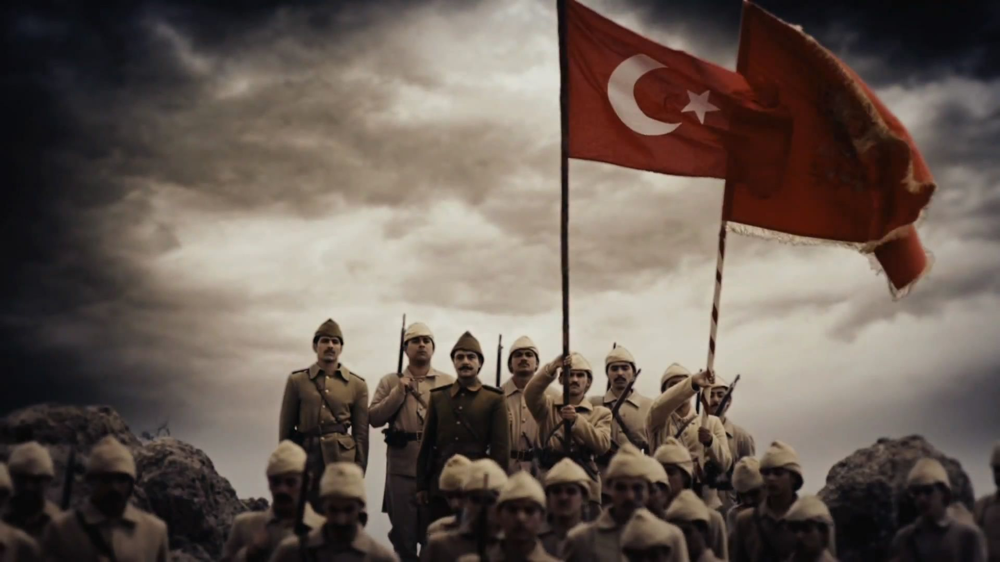
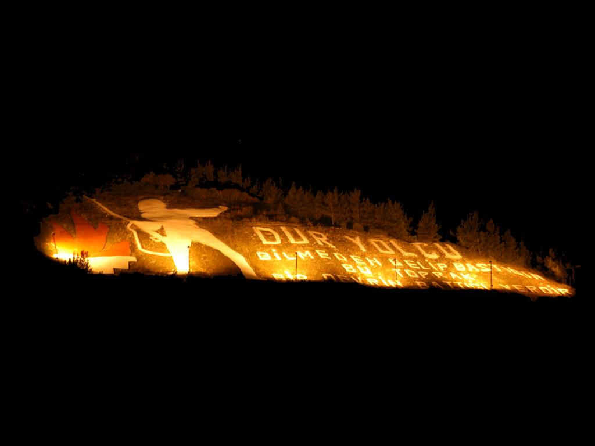
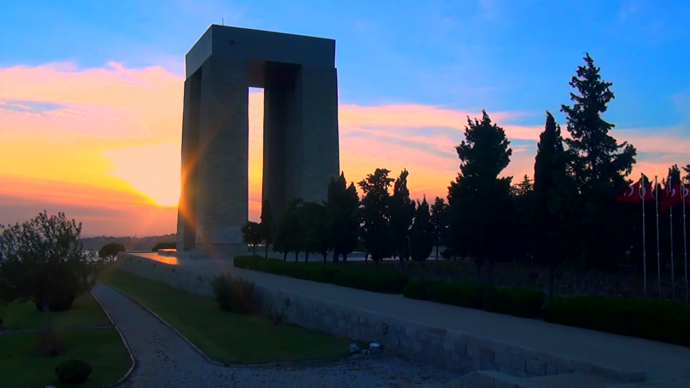
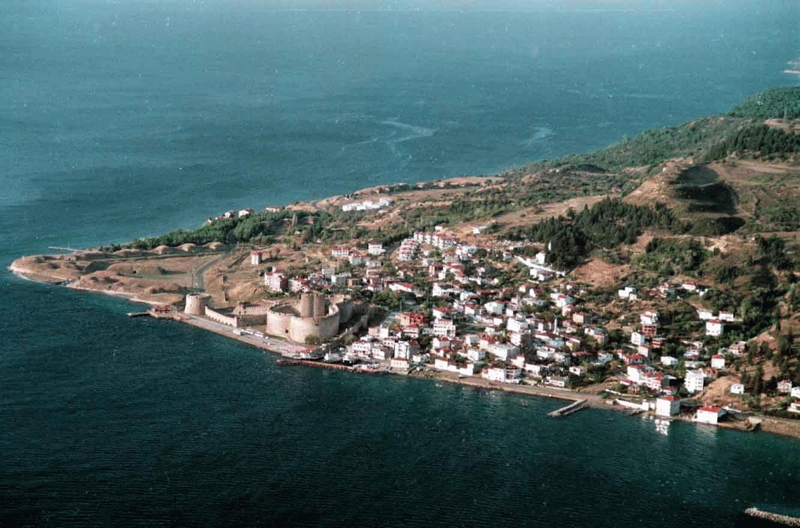

Canakkale
Information About My Hometown
The province of Canakkale lies on both sides of the Dardanelles which connects the Sea of Marmara to the Aegean Sea. Its shores touch both Europe (with the Gelibolu Peninsula) and Asia (with the Biga Peninsula) and there are regular ferries between the two sides.
Canakkale cityThe Canakkale Marina, besides those of Karabiga, Gelibolu, Bozcaada and Kucukkuyu, hosts the colorful yachts which pass through the strait and make a stopover at Canakkale, to see this historical and mythological rich area, homeland of many widely known legends. There is a new pier built in Kepez district of Canakkale, with bulk, general, passenger, Ro-Ro, warehouse and open storage facilities. It is the nearest passenger terminal to Troy for cruise ships.
Canakkale has a nice archaeological museum with many objects distributed in 5 different halls; Canakkale ceramics from 17th century to 20th centuries showing the city being one of the most important cities of ceramic production during Ottoman Empire, chest of drawers of 19th century used in the oldest mansions of Canakkale indicating the best samples of wooden workmanship of the era, tomb steles from Kyzikos in Mysia and ancient towns of Troas region, many findings from Troy, arts discovered in Can and Yenice tumulus dating from Hellenistic period, findings from the ruins of Dardanos tumulus from 6th and 2nd centuries BC, and sculptural and architectural findings from Assos (Behramkale) and Gulpinar (Apollon Smintheion Holy Area). It is open everyday between 08:30am and 17:00pm, except on Mondays.
The province has witnessed two very important battles in history. One of them is the mythological war of Troy, which Homer immortalized in his Iliad. Archaeological digs in Troy (Truva) have proved that there had been nine separate periods of settlement (3000 BC- 400 AD). Here, one can see the ruins of city walls in addition to the Wooden Horse of Troy. The other one is the Battle of Canakkale which took place during World War I when Turkish troops under the command of Mustafa Kemal Ataturk maintained the defense of the region against enemy forces and Canakkale has taken its place in history as "Canakkale; unpassable". To honor the 500,000 soldiers who gave their lives or wounded at Gelibolu (Gallipoli), this peninsula has been made a national park of remembrance. There are memorial monuments here in surroundings of natural beauty.
The small village of Behramkale is a lovely place, facing the Gulf of Edremit. It is founded on the site of Assos where there is the famous Temple of Athena built in the 6th century BC. The panoramic view of the Gulf from the top of the acropolis is breathtaking and the remains of Assos, surrounding the acropolis are worth visiting.
Dardanos tumulus is about 11 km (7 miles) from Canakkale near the Kalabakli stream in Maltepe district. Findings date back to Archaic periods between 7th and 6th centuries BC and to the Roman period around 11 A.D.
Gökceada, the largest of the Turkish islands, and Bozcaada are also in this region. There are many camping facilities and small hotels, sea food restaurants on the islands. Ferries to Gokceada depart from Kabatepe, and to Bozcaada they depart from Geyikli piers.
Other less known but interesting ancient sites around Canakkale are; Hamaxitos, Alexandria Troas, Neandria, Sankrea, Dardanos Tumulus, Abydos, Sestos, Gargara, and Lamponia.
Pictures From Canakkale



